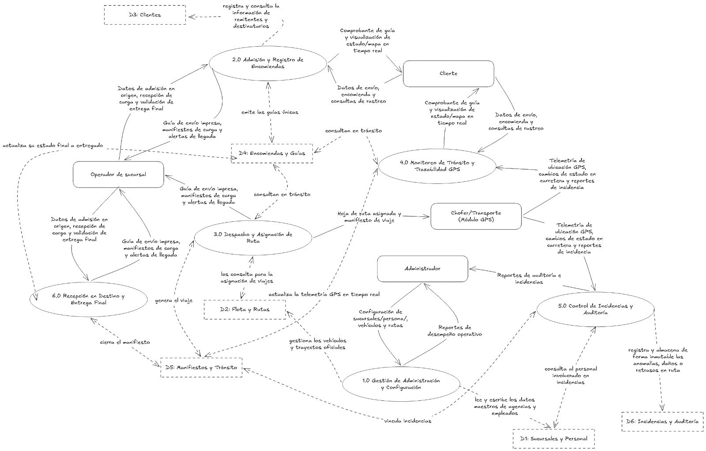
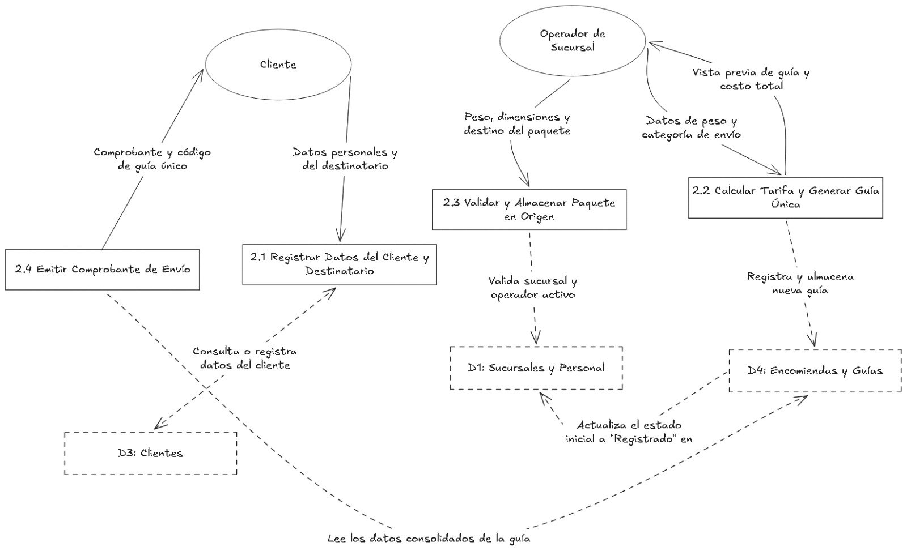
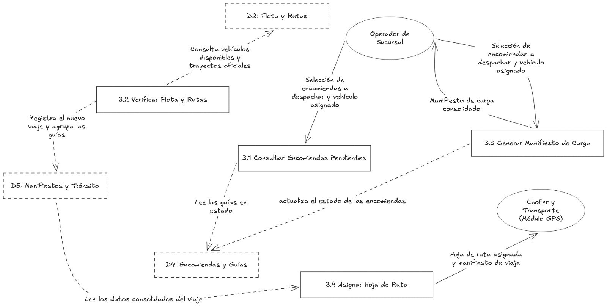
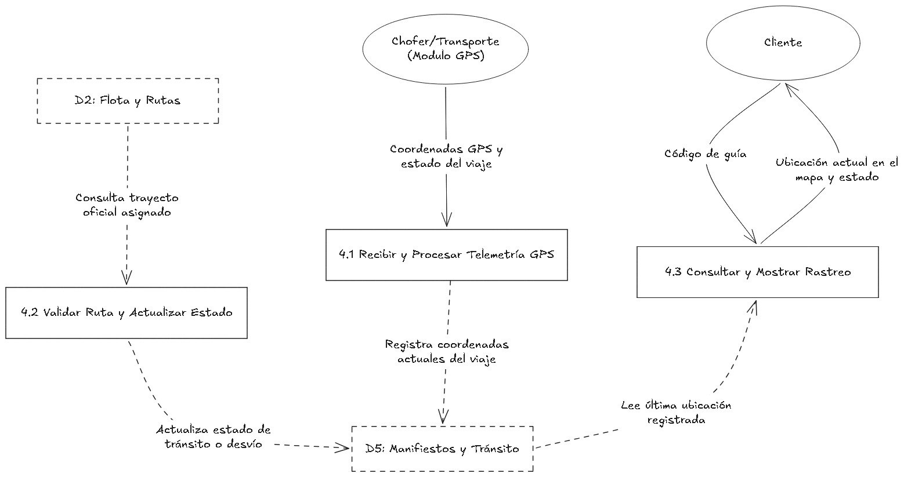
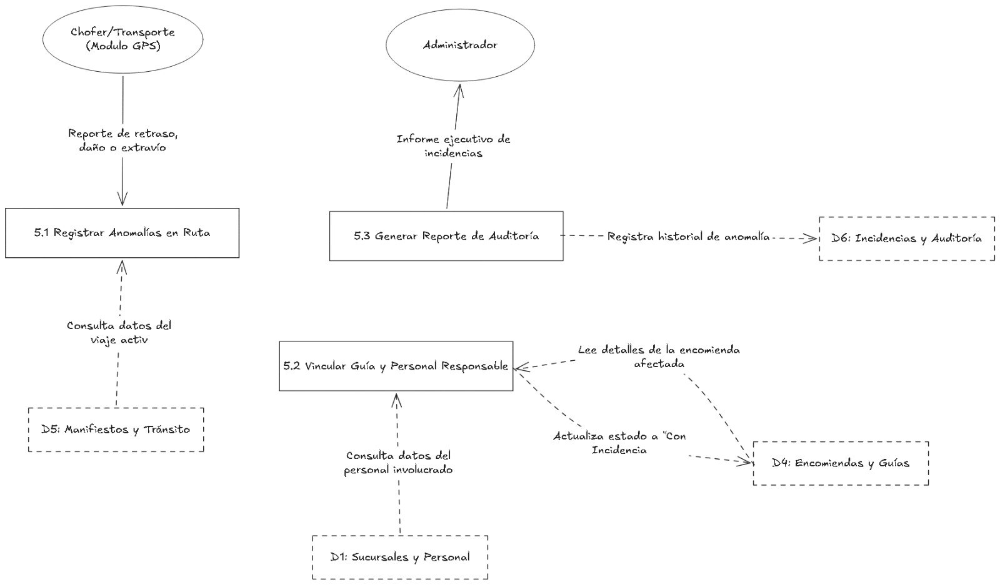

El flujo de datos se lee en dos niveles: el nivel 1 muestra los seis procesos con sus almacenes y las entidades externas; el nivel 2 abre los procesos 2.0 a 5.0 en subprocesos numerados.

Nivel 1: procesos y almacenes
Cada flecha lleva escrito el flujo que transporta. Las líneas continuas unen entidades con procesos; las punteadas, procesos con almacenes.
Procesos
| Código | Proceso | Qué hace | Almacenes |
|---|---|---|---|
| 1.0 | Gestión de administración y configuración | Mantiene sucursales, personal, vehículos y trayectos oficiales | D1 · D2 |
| 2.0 | Admisión y registro de encomiendas | Valida los datos, calcula la tarifa y emite la guía única | D3 · D4 |
| 3.0 | Despacho y asignación de ruta | Agrupa las guías, arma el manifiesto y asigna hoja de ruta | D2 · D4 · D5 |
| 4.0 | Monitoreo de tránsito y trazabilidad GPS | Recibe la telemetría y actualiza el estado del viaje | D2 · D5 |
| 5.0 | Control de incidencias y auditoría | Registra anomalías y produce reportes de auditoría | D4 · D5 · D6 |
| 6.0 | Recepción en destino y entrega final | Confirma la entrega y cierra el manifiesto | D4 · D5 |
Almacenes de datos
| Código | Almacén | Contenido | Procesos que lo usan |
|---|---|---|---|
| D1 | Sucursales y personal | Agencias, empleados y operadores activos | 1.0 · 5.0 |
| D2 | Flota y rutas | Vehículos, capacidades y trayectos oficiales | 1.0 · 3.0 · 4.0 |
| D3 | Clientes | Remitentes y destinatarios con sus datos de contacto | 2.0 |
| D4 | Encomiendas y guías | Envíos, tarifas, guías y su estado | 2.0 · 3.0 · 4.0 · 5.0 · 6.0 |
| D5 | Manifiestos y tránsito | Viajes, hojas de ruta, telemetría y cierres | 3.0 · 4.0 · 5.0 · 6.0 |
| D6 | Incidencias y auditoría | Anomalías, daños, retrasos e histórico de reportes | 5.0 |
Nivel 2: descomposición de los procesos
Cada nivel 2 conserva las entidades externas y agrega solo los almacenes que ese proceso lee o escribe. Los procesos 1.0 y 6.0 no se descomponen en esta entrega.
2.0 Admisión y registro de encomiendas
Cuatro subprocesos convierten los datos del cliente en una guía única y un comprobante. El paquete se valida contra la sucursal y el operador activo antes de emitir el documento.

- 2.1 Registrar datos del cliente y destinatario. Consulta o registra en D3 los datos personales y de contacto.
- 2.2 Calcular tarifa y generar guía única. Recibe peso, dimensiones y categoría de envío; devuelve la vista previa de la guía con el costo total y registra la nueva guía en D4.
- 2.3 Validar y almacenar paquete en origen. Valida sucursal y operador activo en D1.
- 2.4 Emitir comprobante de envío. Lee los datos consolidados de la guía en D4 y entrega el comprobante con el código único.
3.0 Despacho y asignación de ruta
Toma las guías registradas, verifica que haya flota disponible y arma el viaje: manifiesto de carga y hoja de ruta para el chófer.

- 3.1 Consultar encomiendas pendientes. Lee en D4 las guías en estado registrado.
- 3.2 Verificar flota y rutas. Consulta vehículos disponibles y trayectos oficiales en D2, y registra el nuevo viaje en D5.
- 3.3 Generar manifiesto de carga. Consolida la selección del operador y actualiza el estado de las encomiendas.
- 3.4 Asignar hoja de ruta. Lee los datos consolidados del viaje en D5 y entrega la hoja de ruta y el manifiesto al chófer.
4.0 Monitoreo de tránsito y trazabilidad GPS
Recibe la telemetría del módulo GPS, la contrasta con el trayecto oficial y publica la ubicación para el cliente.

- 4.1 Recibir y procesar telemetría GPS. Toma las coordenadas y el estado del viaje, y registra las coordenadas actuales en D5.
- 4.2 Validar ruta y actualizar estado. Compara con el trayecto oficial en D2 y marca tránsito normal o desvío.
- 4.3 Consultar y mostrar rastreo. Lee la última ubicación registrada en D5 y responde al cliente con el mapa y el estado.
5.0 Control de incidencias y auditoría
Todo retraso, daño o extravío entra por aquí: se registra, se vincula a la guía y al personal responsable, y queda en un histórico inmutable.

- 5.1 Registrar anomalías en ruta. Recibe el reporte del chófer y consulta los datos del viaje activo en D5.
- 5.2 Vincular guía y personal responsable. Lee los detalles de la encomienda en D4 y los datos del personal en D1, y marca la guía como «con incidencia».
- 5.3 Generar reporte de auditoría. Guarda el histórico en D6 y entrega el informe ejecutivo al administrador.
Las reglas paso a paso están en la especificación de procesos y los cambios de estado en el diagrama de estados.